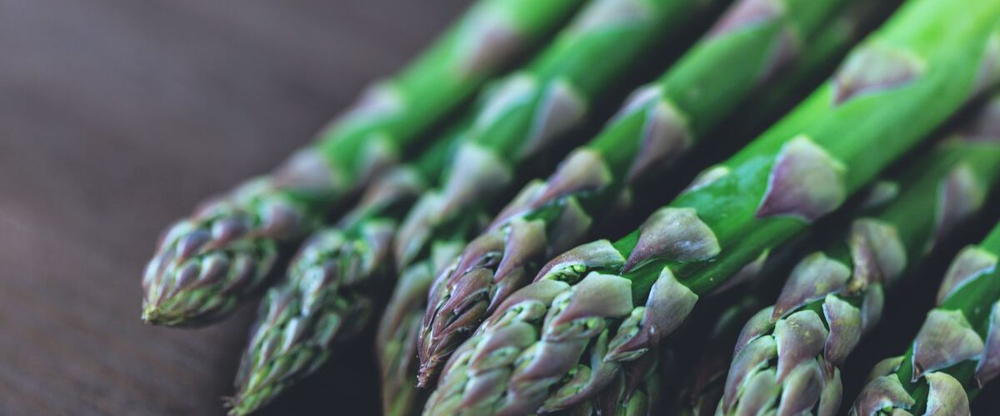

When to plant asparagus in Omak and Okanogan, WA
Plant asparagus crowns in Omak and Okanogan Apr 15 – May 27.
- Difficulty
- Moderate
- Sun
- Full sun
- Spacing
- 12 to 18 inches apart
- Planting depth
- In a trench 6 to 8 inches deep, covered gradually as the spears grow
- Frost
- Hardy perennial; comes back every year
- First harvest
- Light picking in year two; full harvests from year three
Why these dates
Omak and Okanogan's typical last spring frost is April 30. As a hardy perennial, this crop doesn't need to wait for that date. In the Inland Northwest, though, the soil usually isn't ready to work until about April 15.
Inland Northwest. Higher, colder interior valleys. Cold springs and an earlier fall mean a shorter season; quick-maturing varieties pay off.
How to grow asparagus in Omak and Okanogan
- Pick a sunny spot with soil that drains well, and mix in an inch or two of compost.
- Plant asparagus crowns Apr 15 – May 27, 12 to 18 inches apart. In a trench 6 to 8 inches deep, covered gradually as the spears grow.
- Fill the trench in gradually as the shoots grow. Keep the bed weeded, and cut the ferns down only after they turn brown in fall.
- Harvest: Snap spears at soil level when they're 6 to 8 inches tall. Stop picking when new spears are pencil-thin, and let the ferns grow.
Key numbers
- 6.5–7.5Soil pH
- 15–20 yearsBed lasts
- 6–8 weeks, from year 3Full harvest
- Weeds and beetlesBiggest risk
Growing notes
What makes the difference in Northwest gardens, in plain language.
Start with the right bed
An asparagus bed stays put for a couple of decades, so preparation pays off. Choose full sun and soil that drains well, since crowns rot in waterlogged ground. Asparagus likes a near-neutral pH of about 6.5 to 7.5; many west-side soils are more acidic and benefit from lime worked in before planting. Clear out perennial weeds like quackgrass and bindweed completely first; they're almost impossible to remove once crowns are in.
All-male varieties like Jersey Knight and Millennium produce more spears because they don't spend energy on seeds.
Why the ferns matter
Every spear you pick is food the crown stored the year before. After the harvest window ends, the spears grow into tall ferns that make food through summer and send it down to the roots for next spring. That's why you don't pick the first year, pick only a couple of weeks the second year, and why you leave ferns standing until they turn brown in fall.
Feed with compost or a balanced fertilizer after harvest ends, when the ferns are building next year's crop.
Beetles, east and west
Asparagus beetles, small blue-black and orange insects, chew spears and lay dark eggs on them, and their gray larvae strip the ferns. Hand-pick adults in cool mornings, rub off eggs and cut brown ferns in fall to remove their winter cover.
Asparagus does especially well in eastern Washington and Oregon, where hot summers grow strong ferns and cold winters give a full dormancy. West-side beds produce well too, just a little later, and good drainage matters more there.
Common questions
When is the last frost in Omak and Okanogan, WA?
Typically April 30. In 9 years out of 10, frost is over by May 15. These are 1991–2020 NOAA climate normals for Omak Airport.
Is it too late to plant asparagus in Omak and Okanogan?
The spring planting window runs through May 27. Potted plants can still go in later if you water them faithfully through their first summer.
How long until I can pick asparagus?
Light picking in year two; full harvests from year three. Snap spears at soil level when they're 6 to 8 inches tall. Stop picking when new spears are pencil-thin, and let the ferns grow.
Why are my asparagus spears so thin?
Thin spears usually mean a young bed, a crown that was over-picked, or weak ferns the previous summer. Stop picking when spears drop to pencil-thickness, feed after harvest and let the ferns grow freely to rebuild the crowns.
When should I cut back asparagus ferns?
Wait until they turn yellow or brown in fall, after the plant has moved its stored food down to the crowns. Cutting them green weakens next year's harvest. Removing old ferns also takes away a winter hiding place for asparagus beetles.
Can I harvest asparagus the first year?
It's best not to. First-year crowns need every spear to grow ferns and build roots. Pick lightly for about two weeks in year two, then harvest fully for six to eight weeks from year three on.
Also plant in Omak and Okanogan around the same time
Planting dates for asparagus in nearby areas
- Wenatchee, WA Apr 1 – May 13
- Chelan, WA Apr 1 – May 13
- Leavenworth, WA Apr 15 – May 27
- Winthrop and Twisp, WA Apr 17 – May 29
- Ellensburg, WA Apr 15 – May 27
- Spokane, WA Apr 15 – May 27
Full planting calendar for Omak and Okanogan · Asparagus in every city